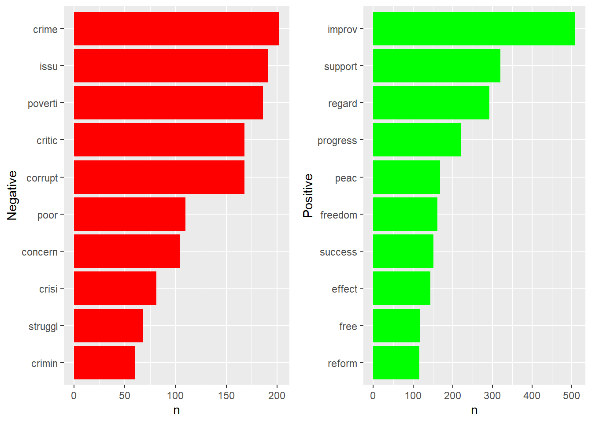
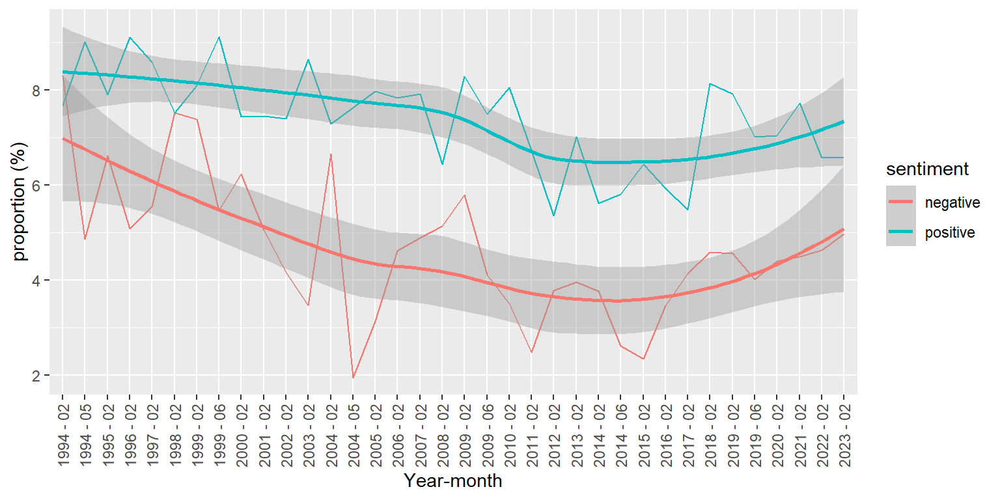
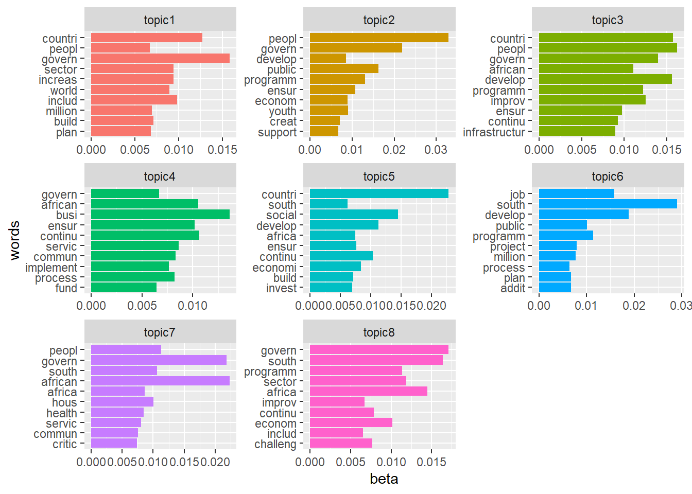
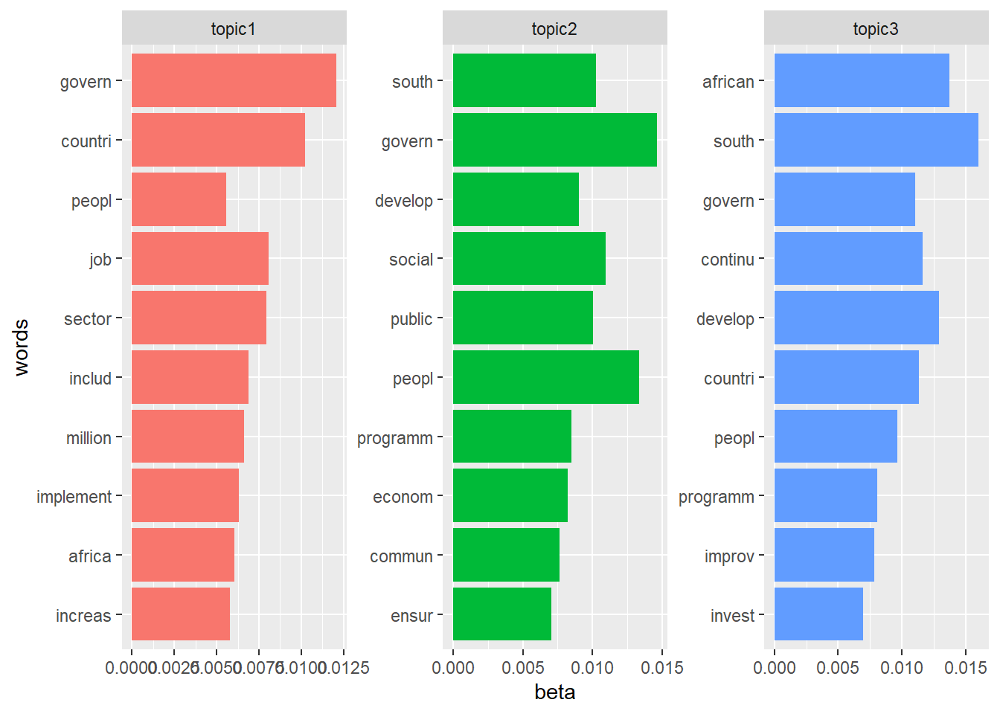

tibble [97,543 × 4] (S3: tbl_df/tbl/data.frame)
$ date : Date[1:97543], format: "1994-05-24" "1994-05-24" ...
$ president: Factor w/ 6 levels "deKlerk","Mandela",..: 2 2 2 2 2 2 2 2 2 2 ...
$ ID : num [1:97543] 1 1 1 1 1 1 1 1 1 1 ...
$ word : chr [1:97543] "time" "nation" "honour" "memory" ...Assignment 2: Descriptive Analysis of Sona Speeches 1994-2023
Introduction
The State of the Nation Address (SONA) delivered by the President of South Africa is a significant annual event. It serves as a platform for the nation’s leader to engage with citizens, government officials, and international observers. This address offers a pivotal opportunity for the President to assess the nation’s current state, articulate government priorities, and lay out policies and plans for the future. It represents a moment that encapsulates the nation’s aspirations in politics, society, and the economy.
The primary goal is to conduct a comprehensive analysis of the speech content, aiming to detect evolving trends in sentiment and topics across time. This examination involves the application of sentiment analysis and topic modeling techniques. Specifically, we will employ the latent Dirichlet allocation (LDA) method for topic analysis. LDA is a widely adopted probabilistic model within the domains of machine learning and natural language processing. When LDA is harnessed for topic modeling, it excels at revealing concealed themes and patterns within extensive textual corpora. It achieves this by establishing connections between words and topics based on their co-occurrence tendencies. Meanwhile, sentiment analysis is focused on unveiling the emotional tone or “sentiment” conveyed within the text.
The SONA data used in this project comprises a total of 36 text files, each representing speeches delivered by six different presidents during the period from 1994 to 2023. The dataset includes 7 speeches from Nelson Mandela, 10 from Mbeki, 1 from Motlanthe, 1 from Ramaphosa, 10 from Zuma, and 1 from de Klerk. The analysis of sentiment and topics in the SONA data serves the purpose of uncovering the evolving subjects of discussion in speeches over time and the emotional tone expressed by each president while delivering their speeches.
Data Preparation
The first step in data preparation encompassed the extraction first date detected from each speech, which denotes the date the speech was delivered. This date information was stored in a designated date variable, facilitating subsequent sentiment and topic trend analysis over time. The second line of each speech, typically containing the welcome address, was omitted.
Following this, the speeches were further processed by segmenting them into individual sentences. Each sentence was then associated with the respective president, enabling us to perform a trend analysis of speeches delivered by each president over time. As a result, the finalized dataset comprises a total of 6877 sentences. President Zuma rendered most of the sentences, accounting for 30% of all sentences in the database, followed by 27% from President Ramaphosa. President Motlanthe and President De Klerk had the least sentence, accounting only for only 3% and 1% of all sentences, respectively.
The next step of data preparation involved the conversion of sentences through methods such as tokenization and removing stop words in order to render the data more suitable for analysis. This process aims to enhance the quality and structure of the textual data for further analysis. To preprocess the text the data was converted into a tibble first them pre-processed using the tidytext package.
The resulting tibble contains 97543 words and 4 variables.
Sentiment analysis
The words are process further to extract sentiments or emotions that are associated with the words using sentiment lexicons. These lexicons enable users to classify words according to whether they express positive or negative sentiment. For this analysis, the tidytext package was utilized, which incorporates a collection of four pre-existing sentiment dictionaries. However for this research the dictionary used is bing, the lexicon lables words as either positive or negative. Table 1 shows that the word flawed is associated with a negative sentiment, while the word flexible is associated with a positive sentiment.
| word | sentiment |
|---|---|
| flat-out | negative |
| flawed | negative |
| flees | negative |
| flexible | positive |
The sentiments linked to the words in our tibble were first attributed, and subsequently, the words underwent stemming. Table 2 indicates that, as per the Bing lexicon, the term “pride” elicits favorable emotions, while the term “dead” elicits unfavorable emotions.
| word | sentiment | date | president | ID |
|---|---|---|---|---|
| pride | positive | 1994-05-24 | Mandela | 1 |
| debt | negative | 1994-05-24 | Mandela | 7 |
| wretch | negative | 1994-05-24 | Mandela | 7 |
| dead | negative | 1994-05-24 | Mandela | 9 |
Exploring the common most positive and negative words used by the presidents
Figure 1 shows that the leading negative word spoke at SONA is crime and the leading positive word spoken at SONA is improv, this is stemmed from the word improvement or improve

Exploring the change in sentiment over time
In our analysis of the changes in sentiment over time, we observed (as seen in Figure 2) that the frequency of positive sentiment expressed in State of the Nation Addresses (SONAs) has remained relatively consistent over the years, from 1994 to 2009. However, there was a slight uptick in positive sentiments in 1994 May by 134 basis points. This is the period when Mandela addressed the nation post 1994 elections. A further uptick in positive sentiments was observed in 1995. This was a period marking a turning point in South African history, as they were the first democratic elections in the country. Nelson Mandela’s inauguration as President of South Africa was a momentous event, signifying the end of apartheid and the beginning of a new era of democracy. The positivity in his speech likely reflected the optimism and hope associated with this historic transition.
Conversely, the portrayal of negative sentiment, relative to the total words spoken, exhibited a distinct pattern. In the inaugural SONA of 1994, a notably elevated level of negative sentiment was evident. Subsequently, there was a substantial and consistent decline, spanning nearly two decades until 2015, marking a total decrease of negative sentiment by approximately 596 basis points, as seen in Figure 2. However, commencing from 2016, a notable reversal in this trend becomes apparent. This particular shift aligns with the conclusion of the Zuma era. During this period, the political and social landscape was evolving. This period was marked by political controversies, allegations of corruption, and challenges in governance. The Negative sentiment in SONAs during this time could reflect public concerns and criticisms related to these issues.
Negative sentiments has remained on an upward trajectory since 2015. However, There’s been a slight increase in positive tone during SONA since 2018, an uptick of 539 basis point since 2017. This coincides with the Ramaphosa era. His presidency marked a transition to a new leadership characterized by promises of good governance, transparency, and a commitment to addressing the country’s challenges. These promises and a fresh start under new leadership would naturally generate positive sentiment.
While positive sentiment in SONAsremains notably higher than during the Zuma era, hovering above 6%, there has been a marginal decrease in the optimistic tone in President Ramaphosa’s recent addresses. Several factors might contribute to this decline in positive sentiment as South Africa continues to grapple with significant problems such as unemployment. The ongoing existence of these challenges may contribute to a more tempered positive sentiment, corruption, an economic downturn and the on-going power outages. All these issues contribute to a dampened positive sentiment.

Topic Analysis: Latent Dirichlet allocation (LDA)
Latent Dirichlet Allocation (LDA) is a probabilistic model used for topic modeling in text data. It is based on the concept of hidden variables, which are unobserved variables that help uncover patterns in the data. It assumes that each document is a mix of a few secret topics, and it figures out these topics by looking at the words in the documents. The output includes a list of topics, what words belong to each topic, and how much of each topic is in each document. LDA creates collections of topic-word distributions. Each topic is linked to a probability distribution across words in the entire corpus. These distributions illustrate the words that are most inclined to be linked with each respective topic
Fitting Latent Dirichlet Allocation (LDA) involves several steps, from preparing your text data to selecting appropriate parameters for the LDA model. The first step entailed converting the data into a corpus object by specifying the column in the data that contains “text”, this column is “word” in our case. Fortunately, the data was already pre-process for the purpose Sentiment analysis and no further procesing was required. There are words that were removed from the corpus object, these are words that add no value to the topic analysis such as “time”,“nation”,“honour”,“memori”,“son”,“daughter”, and removing other common words to allow for an easy of extracting/isolating important themes.
The corpus object was then converted into a Document Term Matrix using the quanteda package. The topicmodel package was used to fit the LDA topic model.
A speech usually tackles a number of issues/topics. Therefore we need to set a relatively high k value that will allow us to capture more specific topics. The main topical issues during SONA are mainly the economic policy and development, security and law enforcement, social welfare and poverty alleviation, healthcare, and many other issues. As a result, the k parameter in the model is set to 8 as a start
The resulting model is as seen below:
Formal class 'LDA_VEM' [package "topicmodels"] with 14 slots
..@ alpha : num 8.93
..@ call : language LDA(x = toks, k = 8, control = list(seed = 5))
..@ Dim : int [1:2] 95945 7091
..@ control :Formal class 'LDA_VEMcontrol' [package "topicmodels"] with 13 slots
.. .. ..@ estimate.alpha: logi TRUE
.. .. ..@ alpha : num 6.25
.. .. ..@ seed : int 5
.. .. ..@ verbose : int 0
.. .. ..@ prefix : chr "C:\\Users\\x903674\\AppData\\Local\\Temp\\RtmpigDxY2\\file5a9866fe72b"
.. .. ..@ save : int 0
.. .. ..@ nstart : int 1
.. .. ..@ best : logi TRUE
.. .. ..@ keep : int 0
.. .. ..@ estimate.beta : logi TRUE
.. .. ..@ var :Formal class 'OPTcontrol' [package "topicmodels"] with 2 slots
.. .. .. .. ..@ iter.max: int 500
.. .. .. .. ..@ tol : num 1e-06
.. .. ..@ em :Formal class 'OPTcontrol' [package "topicmodels"] with 2 slots
.. .. .. .. ..@ iter.max: int 1000
.. .. .. .. ..@ tol : num 1e-04
.. .. ..@ initialize : chr "random"
..@ k : int 8
..@ terms : chr [1:7091] "father" "youth" "children" "deed" ...
..@ documents : chr [1:95945] "text1" "text2" "text3" "text4" ...
..@ beta : num [1:8, 1:7091] -11.53 -9.24 -11.31 -11.2 -11.93 ...
..@ gamma : num [1:95945, 1:8] 0.124 0.123 0.126 0.127 0.124 ...
..@ wordassignments:List of 5
.. ..$ i : int [1:96329] 1 2 3 4 5 6 7 8 9 10 ...
.. ..$ j : int [1:96329] 1 2 3 4 5 6 7 8 8 9 ...
.. ..$ v : num [1:96329] 7 2 6 6 7 1 6 7 7 4 ...
.. ..$ nrow: int 95945
.. ..$ ncol: int 7091
.. ..- attr(*, "class")= chr "simple_triplet_matrix"
..@ loglikelihood : num [1:95945] -9.72 -6.38 -6.57 -8.88 -8.52 ...
..@ iter : int 23
..@ logLiks : num(0)
..@ n : int 96329From the results of the model, our focus is on extracting the word-topic probabilities, which are represented by the exponent of beta values for each word. We can then delve into the analysis to identify the top N words per topic, specifically those with the highest probability scores within each topic.

A deeper analysis of the key features/words in each topic shows that the main theme in topic 3 is investments, business news. The theme for topic 8 seems to be local infrastructure development, social responsibilities, ans service delivery. Topic 1 focuses of employment creation and job security, topic 2 focuses on the business landscape, investments. Topic 5 seems to focus around the theme of policy reform and empowerment of the marginalized. However, it is clear that most words are common to all 8 topics.
Reducing K
The result of the LDA model allows us to better zero in on the main themes of the SONA. Topic 3 appears to be centred around investments/topic, topic 2 around infrastructural development and service delivery and Top 1 is centered around economic policy, develpment, and overall governance. The overlap in the top 10 words between the 3 topics is less than when k was larger. There are now more distinct words in each topic.

large language model such as ChatGPT
I used chat GPT to help me understand what the purpose of the LDA model , how it works and how to interpret it’s output. The prompt I used was “explain to me LDA topic modelling in latent terms. how it works and what is the output generated”. I used it to also understand what is an ideal k to use for the purpose of evaluating SONA data, followed by the prompt “what are the main topical issues in a president’s address, what should be k for a speech mining LDA”. Based on the topical issues AI suggested I used two values of k, 3 and 8 and assessed the model’s ability to identify hidden trends.
I also used chat GPT to refine or debug my code. For example when I was plotting the graphs, I had errors and I asked it to debug my error, and I passed it my original code and prompted it to refine my code and tell me what it had fixed.
When I was attempting to convert my tibble to a a dfm. I could not get the method to work with the tidytext() package. So I passed it the tidytext code and asked it to return an alternative method. It suggested I use quanteda, but the code still did not work, I fixed the code by coverting my tibble into a corpus using quanteda and to dfm.
I also used chat GPT to help me extract the dates contained in the text file. For the purpose of sentiment analysis I needed to use the date each speech was rendered. The challenge is that this date is not always in the first sentence of the text file, sometimes it is located in other places within the first sentence. I used the prompt: “my data contains text data , the first line contains the date , but sometimes it is located at the beginning or end of the string, how do you search for date here: State of the Nation Address by President Cyril Ramaphosa, Cape Town City Hall, 9 February 2023” to help the machine conceptualize my issue. It returned a code. However the code it returned showed all the dates mentioned in each speech, some speech_IDs had more than one date, but I just needed the first date. I therefore refined the solution by extraction only the first item in each list.
I also used chat GPT to help me refine my thoughts or sentences. For example, I need restructing a caption for one of my figures, it did not seem to be descriptive or grammatically correct, i passed the prompt “refine my caption : Figure 3: LDA topic model with 8 salient topics and the top 10 words with the highest probability”
I used Chat GPT to assist me in plotting multiple graphs in one window. The method par(mfrow = c(2, 2)) would not seem to work, so I asked for an alternative method and it suggested using the gridExtra library.
Plagiarism declaration
I, Bahle Motshegoa, a student at the University of Cape Town in the Department of Statistical Sciences, with student number MTSNOB004, declare that:
1. I know that plagiarism is wrong. Plagiarism is to use another’s work and pretend that it is one’s own.
2. I have used a generally accepted citation and referencing style. Each contri- bution to, and quotation in, this report from the work(s) of other people has been attributed, and has been cited and referenced.
3. This report is my own work.
4. I have not allowed, and will not allow, anyone to copy my work with the intention of passing it on as his or her own work.
5. I acknowledge that copying someone else’s assignment or essay, or part of it, is wrong, and declare that this is my own work.
Signed on October 24, 2023: